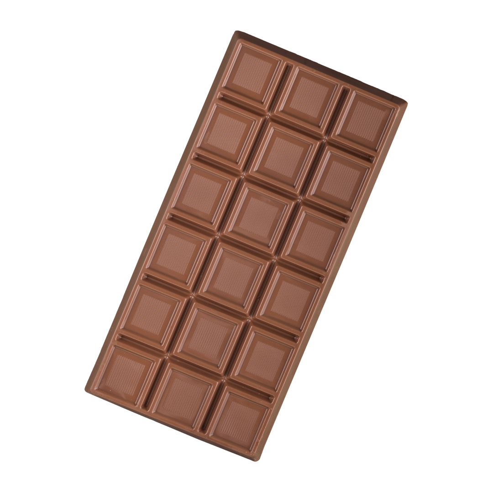
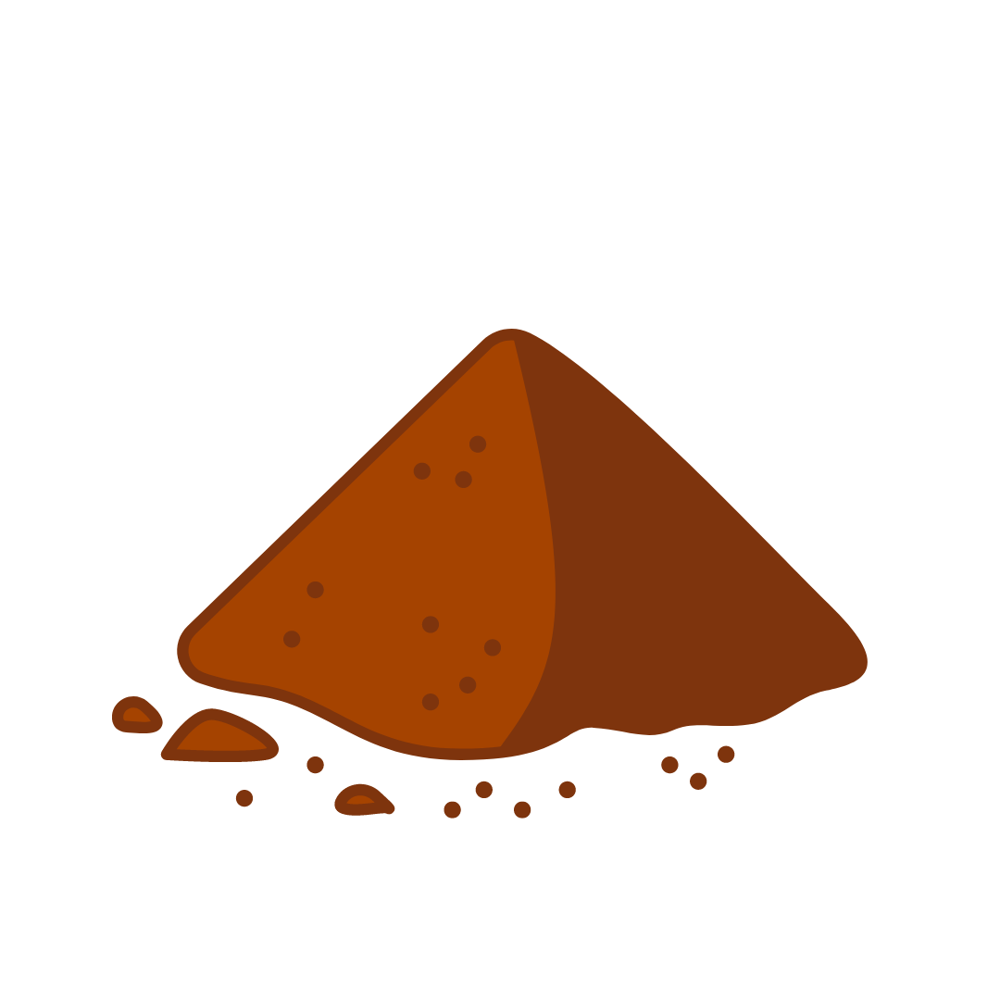
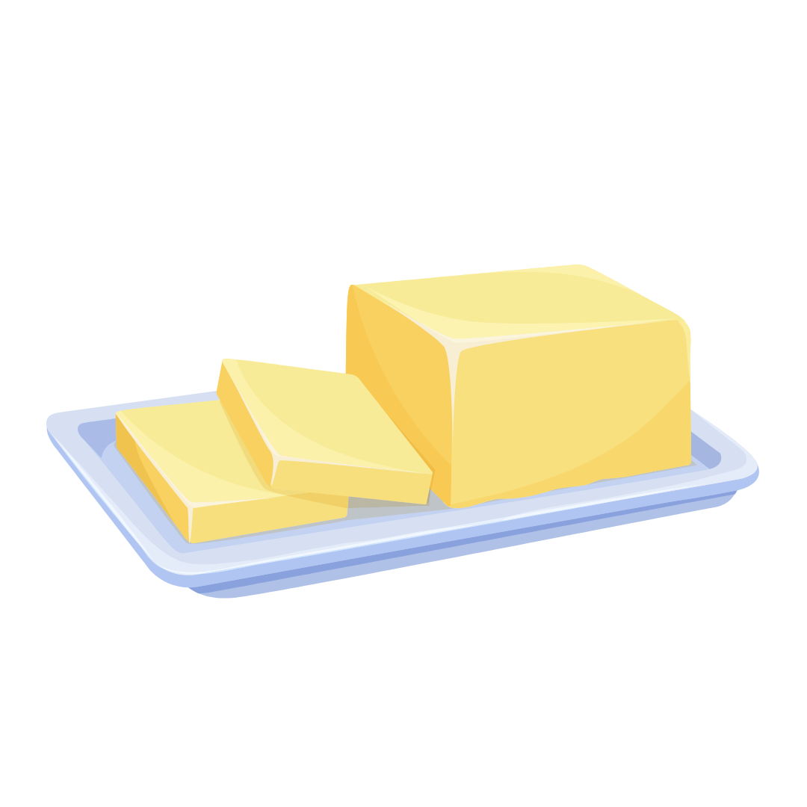
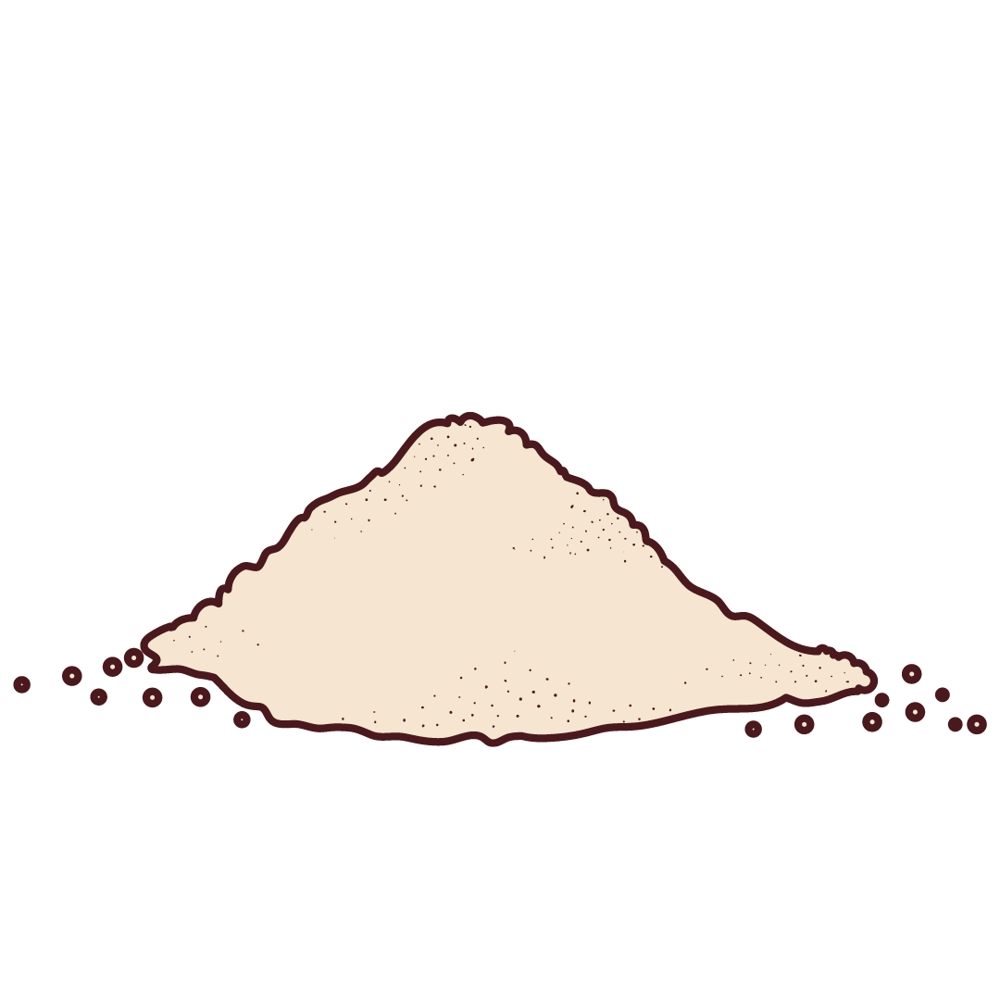
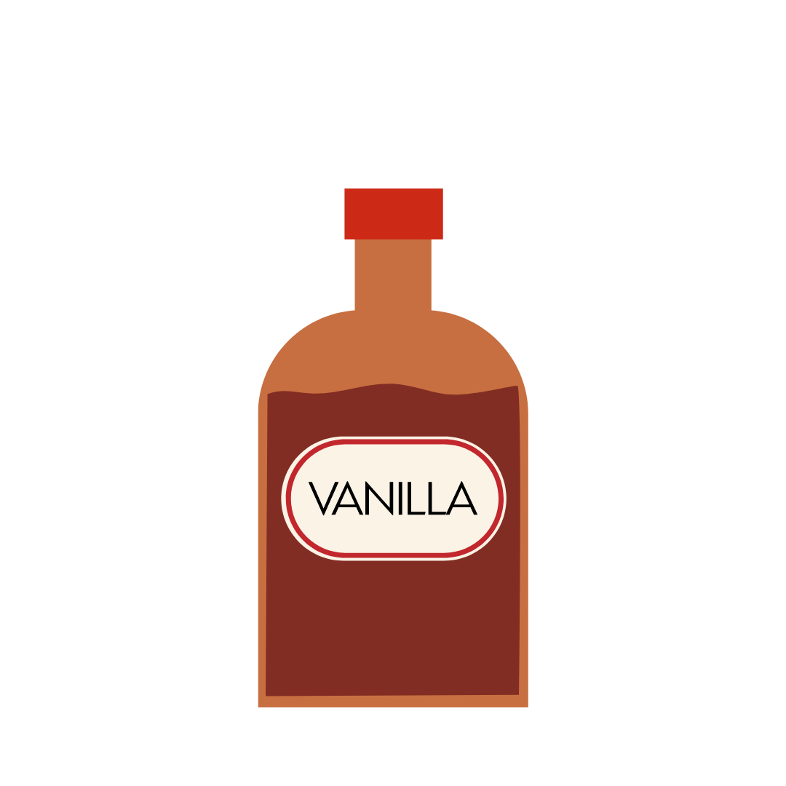

- Chocolate Mousse is an easy to make at home dessert
- First, microwave butter, instant coffee and chopped chocolate bar
together at 30-second intervals while stirring it until it's fully melted. - Create another mixture by mixing the powdered sugar and cocoa powder
together. - Whip the heavy cream until frothy.
- Slowly add the powdered sugar-cocoa powder mixture a little at a time
until fully combined. - Then stir in the vanilla. Combine whipped cream with melted chocolate.
- Add some of the whipped cream to the melted chocolate bowl
and fold it in until no streaks are left. - Pipe with a bit of fresh whipped cream on top and sprinkle
with some chocolate shavings.
Chocolate bar
Cocoa Powder
Butter
Powdered Sugar
Whipping Cream

Vanila Extract
Instant Coffee